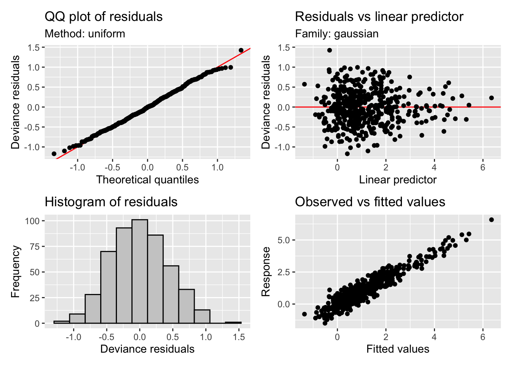
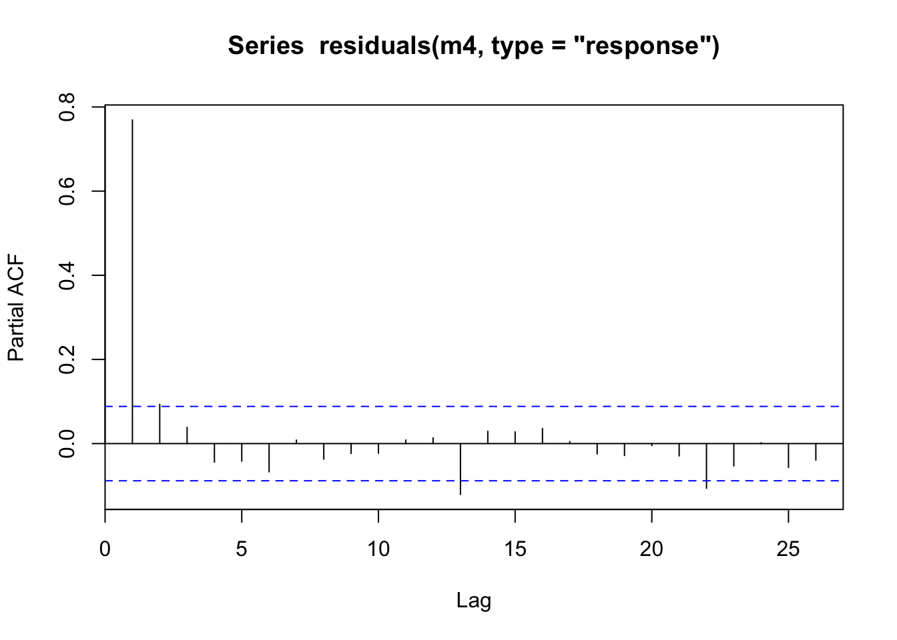

In this notebook we will explore the use of Generalised Additive Models (GAMs) for timeseries data using the mgcv package. There are many great resources on GAMs (see the “Further reading” section for a start), the idea of this notebook is to really guide readers towards these more comprehensive works. To this end we will show some of the power of GAMs and some of the potential pitfalls (in particular when it comes to timeseries data) in an example that will hopefully resonate more with those with a background in water.
To make things easier we will be using synthetic data which will allow us to explore the GAM fitting in a controlled way. We will be using a synthetic streamflow dataset which we aim to disentangle into the various components which contribute the overall signal.
The aim is to find the underlying time trend that is present beyond the influence that can be accounted for between the other climatic variables.
library(tidyverse) # Standard
── Attaching core tidyverse packages ──────────────────────── tidyverse 2.0.0 ──
✔ dplyr 1.1.4 ✔ readr 2.1.5
✔ forcats 1.0.0 ✔ stringr 1.5.1
✔ ggplot2 3.5.1 ✔ tibble 3.2.1
✔ lubridate 1.9.3 ✔ tidyr 1.3.1
✔ purrr 1.0.2
── Conflicts ────────────────────────────────────────── tidyverse_conflicts() ──
✖ dplyr::filter() masks stats::filter()
✖ dplyr::lag() masks stats::lag()
ℹ Use the conflicted package (<http://conflicted.r-lib.org/>) to force all conflicts to become errors
library(mgcv) # Package for fitting GAMs
Loading required package: nlme
Attaching package: 'nlme'
The following object is masked from 'package:dplyr':
collapse
This is mgcv 1.9-1. For overview type 'help("mgcv-package")'.
library(gratia) # Package for plotting GAMs
Attaching package: 'gratia'
The following object is masked from 'package:stringr':
boundary
library(patchwork) # Package for arranging plotssource('functions/adj_gam_sim.R')source('functions/plotting.R')
Load covariates
Load processed synthetic streamflow data (created using 00_synthetic_timeseries_generation.Rmd).
Rows: 492 Columns: 8
── Column specification ────────────────────────────────────────────────────────
Delimiter: ","
dbl (7): rain, SOI, year, moy, time, log_flow, flow
date (1): month
ℹ Use `spec()` to retrieve the full column specification for this data.
ℹ Specify the column types or set `show_col_types = FALSE` to quiet this message.
Lets plot the variables (both the target and the covariates) that we have available to us monthly:
rainfall: mm monthly sum
SOI: Southern Oscillation Index
moy: month of the year (1-12 before scaling)
time: months from start of the series
flow: monthly mean streamflow (target)
log_flow: log of target
You can see that the target variable flow is given in ML, however the covariates have all been scaled to be between 0 and 1.
# plot of time covariateswrap_plots(ggplot(streamflow_data, aes(x = month, y = time)) +geom_line() +labs(x ="Year",y ="Time" ),ggplot(streamflow_data, aes(x = month, y = moy)) +geom_line() +labs(x ="Year",y ="Month of the year" ),ncol =1)
# plot of the hydrological covariates and target variablewrap_plots(ggplot(streamflow_data, aes(x = month, y = flow)) +geom_line() +labs(x ="Year",y ="Streamflow (ML)" ),ggplot(streamflow_data, aes(x = month, y = rain)) +geom_bar(stat ="identity") +labs(x ="Year",y ="Rainfall (mm)" ),ggplot(streamflow_data, aes(x = month, y = SOI)) +geom_line() +labs(x ="Year",y ="SOI" ),ncol =1)
Our streamflow is clearly correlated to rainfall as one might expect however it is unclear the influence of broader climatic variability (in this case represented by SOI) or if there are any other persistent trends in the data beyond the effect of SOI.
GAM fitting
A simple time trend and choosing a target
First lets try with a linear fit to the time variable, this will give us a simple time trend. We supply the gam with a formula (see ?formula.gam) which describes the additive relationship among the covariates and the target variable. In this case we are specifying a simple model:
# try with a linear fit firstm1 <-gam( flow ~ time, # the formula specifying the modeldata = streamflow_data, # our data.framefamily =gaussian(link="identity") # our family and link function)summary(m1) # text summary of the model
Family: gaussian
Link function: identity
Formula:
flow ~ time
Parametric coefficients:
Estimate Std. Error t value Pr(>|t|)
(Intercept) 4.276 3.567 1.199 0.2312
time 11.748 6.175 1.903 0.0577 .
---
Signif. codes: 0 '***' 0.001 '**' 0.01 '*' 0.05 '.' 0.1 ' ' 1
R-sq.(adj) = 0.00531 Deviance explained = 0.733%
GCV = 1576.1 Scale est. = 1569.7 n = 492
draw(parametric_effects(m1)) # plot our linear trend term
Looking at the estimated linear trend (given by draw(parametric_effects(m1))) there’s a fair bit of uncertainty, and this can also be see examining the “Parametric coefficients” section of summary(). Lets use the gratia function appraise() to check the residuals of the model.
appraise(m1)
# plot the model prediction against our synthetic streamflow values using a handy functionplot_model_prediction(m1, streamflow_data)
Oh sweet Caroline, those residuals! They are awful to say the least. You can look at the prediction plot and see why, we have a very large tail as a result of the residuals when predicting the “flood” events. Granted we haven’t used any of our covariates yet (namely rainfall which will be the main driver of streamflow), but its still not looking good.
mgcv gives us the option via the family argument (see ?family.mgcv) to specify a range of distributions for the residuals. We have used guassian with an identity link. We could perhaps try a distribution that better describes our residuals, for example a Gamma distribution (Gamma(link="log")) or Tweedie (tw(link="log")) - note both use a log link to transform \(\mu\) into the response space. In GLM terms \(\mu = g^{-1}(X\beta)\) where \(g\) is the link function. This call would be something like:
m2 <- gam(flow ~ time, data = streamflow_data, family = Gamma(link="log"))
Not to over complicate things lets just aim to get our residuals, which are spread over orders of magnitude, on a reasonable scale. Power transforms are commonly used in the hydrological literature (namely box-cox transforms) to address these types of heteroscedasticity issues. So lets model instead the log of the streamflow (log_flow in our streamflow_data data frame) with the same gaussian family (and identity link).
Family: gaussian
Link function: identity
Formula:
log_flow ~ time
Parametric coefficients:
Estimate Std. Error t value Pr(>|t|)
(Intercept) 0.9089 0.1128 8.059 5.91e-15 ***
time 0.4552 0.1952 2.331 0.0201 *
---
Signif. codes: 0 '***' 0.001 '**' 0.01 '*' 0.05 '.' 0.1 ' ' 1
R-sq.(adj) = 0.00895 Deviance explained = 1.1%
GCV = 1.5756 Scale est. = 1.5692 n = 492
appraise(m2)
draw(parametric_effects(m2))
# plot on original and with log10 y scale to better show the fitpred_plot <-plot_model_prediction(m2, streamflow_data, exp_bool = T)wrap_plots( pred_plot, pred_plot +scale_y_log10(),ncol =1)
The residuals are looking much much better, we seem to have solved the heteroscedasticity issues, though we still have some large deviances (unsurprising given we are only fitting a linear trend). We have a trend that increases through time now that our model is not being influenced as strongly by the heavy tailed residuals, although our uncertainty bands are again large. However, mgcv calculated significance of the smooth terms is starting to indicate that the smooth may be significant - scraping in under the mystical p<0.05 threshold with a cool 0.0201 (see the summary() output).
Introducing a smooth on time
We are now going to get a bit more adventurous and will introduce a smooth on time (s(time)). This means diving into the complexities of a nonlinear and flexible fit to the time trend. For the sake of brevity we will start to introduce some of the other covariates we expect to be influencing the streamflow too - in this case a seasonal component which fits a spline based on the month of the year s(moy).
# gratia has a function derivatives() so that we can see how the smooth is changing and how certain we are that it is increasing or decreasingwrap_plots( pred_plot +scale_y_log10(),draw(derivatives(m3, select="s(time)"), add_change =TRUE, change_type ="sizer"),ncol =1)
You can see we have now have a model with much improved residuals given we are now starting to explain some of the variability in the data (R-sq.(adj) = 0.16). The seasonal component shows variability in the flow that peaks around March and troughs in the late part of the year. This can be seen in the prediction plot too where we have some varibility on top of the trend. However we also see something strange, the effect of moy is noticeably different from the end of December to the beginning of January. We can’t blame the model, its just cranking the handle and doing its very best. But we can use some prior knowledge to ensure the model is coherent and thus be more confident in our results. There are many types of splines we can use in mgcv (see ?smooth.terms). We wont go into them all here, but we will make use of a cyclic spline (bs="cc") which is specifcially designed to ensure the ends are penalised to match, i.e., there should be no large discontinuity in the seasonal component. We will adopt this fix in the models below and you can check out the fixed smooth below.
The time trend itself is picking up now some of the broader patterns with periods of higher streamflow around 1990 and in the 2020s. Time is once again identified as significant by mgcv (p = 0.00635). When we use gratia::derivatives() to look for significant periods of change in this trend we see that the model is showing that the magnitude of this trend was very likely increasing through the 2010s.
But we still haven’t explored what we could strongly suspect to be the main driver of streamflow variability: rainfall-runoff processes. We expect this to have some nonlinearity, clearly we are grossly simplifying the processes in the catchment in particular with respect to groundwater interactions (and of course to let you in on a secret, in this example we have employed nonlinearity for this term when creating our synthetic data). So we add a smooth on monthly rainfall (s(rain)).
In addition we add in the impact of longer term climatic variability on the streamflow. In this dataset we capture this through the Southern Oscillation Index (SOI) which we interpret as the effect of longer periods of wet and dry on the catchment which contribute to the overall streamflow signal. For example, we might expect say soil moisture to be lower after extended dry periods leading to less streamflow for a given amount of rainfall compared to times with waterlogged soil. Here we introduce another smooth on this term.
We have a really good fit now, we are explaining a lot of the variance (R-sq.(adj) = 0.881). We have some interesting and realistic looking smooths on the new variables of rainfall and SOI with low uncertainty. The SOI smooth looks reasonable, during periods of high SOI (La Niña) we might expect wetter conditions compared to periods of low SOI (El Niño). The smooths are all determined to be significant by mgcv but note our time smooth has changed from m3, though again with p=0.00723.
But all is not well with our time smooth. We use the gam.check() diagnostic to check our model and the basis dimension checking (see the returned text) is returning that something is off about the s(time) smooth. It’s indicating that we may need to increase the number of maximum knots in the smooth above the default k=10 to fully explore the space of possible functions. You can see choose.k for more information on this diagnostic and we will explore the implications of this below.
gam.check(m4)
Method: GCV Optimizer: magic
Smoothing parameter selection converged after 6 iterations.
The RMS GCV score gradient at convergence was 8.345812e-07 .
The Hessian was positive definite.
Model rank = 36 / 36
Basis dimension (k) checking results. Low p-value (k-index<1) may
indicate that k is too low, especially if edf is close to k'.
k' edf k-index p-value
s(time) 9.00 3.15 0.23 <2e-16 ***
s(moy) 8.00 6.57 1.04 0.80
s(rain) 9.00 3.16 0.95 0.14
s(SOI) 9.00 3.03 0.97 0.21
---
Signif. codes: 0 '***' 0.001 '**' 0.01 '*' 0.05 '.' 0.1 ' ' 1
Wiggliness
Below we look at the effects of increasing the maximum number of knots in the time smooth. Smooths have of course a penalty term which controls the wiggliness of the smooth as it attempts to fit the data. However, there is still some trade-off allowed between the complexity of the smooth and goodness of fit. By increasing k, we allow the model to explore a broader range of possible fits to the data and find that there are some fits to the data that better navigate that trade-off. Thus the smooth changes as we increase k.
But are these trends really realistic? What are the other possible explanations for this highly variable time trend? One of the common afflictions of timeseries data is autocorrelation and particularly for us problems can arise when the residuals are not independent (i.i.d.). We could for instance imagine a flood event with a duration that spans multiple data points leading to correlated residuals in time if our model consistently under predicts an event perhaps. Or perhaps there are storages in the system which result could result in extented periods of increased baseflow after an event occurs. Here we model on the monthly scale so perhaps in non-synthetic data it would be less of a problem, but we could still imagine processes on medium timescales leading to autocorrelation in the residuals of our imperfect model.
What makes it particularly bad in this situation, however, is that we have a very flexible term (s(time)) which is able to absorb some of this autocorrelation. If residuals were purely independent it wouldn’t be a problem as only having a number of knots close to/equal to the number of observations would really drive these residuals into our time smooth. With autocorrelated residuals though, the model picks up these patterns and does what it does best, fits them using any and every means available to it. Lets not blame the model, its really trying its very best. But this process means that our flexible smooth on time can absorb/fit these patterns if we give it sufficient flexibility (as in the k=30,100 cases). Lets do a check for autocorrelation in the residuals.
acf(residuals(m4, type="response"))

pacf(residuals(m4, type="response"))
acf(residuals(m4_med, type="response"))
pacf(residuals(m4_med, type="response"))
Looking at the residuals for model m4 we can see there is large autocorrelation in the residuals and in model m4_med we can see this still present but partially absorbed by our much higher complexity s(time). The partial autocorrelation function (PACF) tends to indicate the highest effect is via an AR1 process (high correlation at lag = 1).
Facing down autocorrelation
So how can we deal with this? Well up until this point we have been using the gam function in mgcv, and we will find no help there. However, we can look to the gamm function which fits a Generalized Additive Mixed Model (GAMM). Again this post isn’t designed to be a textbook on GAM(M)s so practically for us it means that we can use lme correlation structures to model the residuals. This means we can tell the model to expect AR1 correlation residuals and account for these when fitting (instead of heaping these patterns into our precious time smooth). Specifically we will use the correlation argument and specify corAR1() (see ?corClasses). Lets take a look shall we.
# fit again a model with a large number of knots for time, but now with AR1 residualsm5 <-gamm( log_flow ~s(time, k=100) +s(rain) +s(moy, bs="cc") +s(SOI),data = streamflow_data,method ="REML",correlation =corAR1(), # our correlation structurefamily =gaussian(link="identity"))summary(m5$gam)
Hey! Comparing our time smooths from our m4_mlrg model above to our new m5 model (the same model just with AR1 residuals structure specified in gamm, also see “A note” section), our time smooth is now looking much better. The model is no longer trying to fit the autocorrelation patterns using s(time) as expected. Lets go ahead and look at the smooths from our final model against the functions we used to create the synthetic data.
# get the "true" relationshipsgt_data <-generate_gtdata()# compare to the smooths from m5wrap_plots(draw(m5, select="s(moy)") +geom_line(data=gt_data, aes(x = moy, y = f_moy), color="red") +theme_minimal(),draw(m5, select="s(rain)") +geom_line(data=gt_data, aes(x = rain, y = f_rain), color="red") +theme_minimal(), draw(m5, select="s(SOI)") +geom_line(data=gt_data, aes(x = SOI, y = f_SOI), color="red") +theme_minimal(),draw(m5, select="s(time)") +geom_line(data=gt_data, aes(x = time, y = f_time), color="red") +theme_minimal(),ncol =2)
Looking excellent thanks to the wonders of synthetic data! Note that there was actually no underlying trend in the streamflow over time and our model now correctly picks that! The model still indicates that an average estimate is slightly increasing (take note of the models above to see how this could still be a valid explanation for the data) but it appropriately shows that it is in no way confident (p=0.329 so it is not identified as a significant smooth).
This is a good reminder, in light of all the model fits above, there are so many environmental processes working at different time scales that influence the signals we measure. We have to be really careful about what we are modelling, how we are modelling it, and what could be constituting any underlying trends that we try to measure in a lumped way (e.g., using a smooth on time). GAMs are a really neat tool, and are highly interpretable. But of course with any model, it only answers the questions posed to it.
A note
gam and gamm fit the model differently (also note from ?gamm help: gamm is not as numerically stable as gam: an lme call will occasionally fail). Again the purpose of this post was just to show some of the issues with synthetic data, but I feel compelled to point out that m4_med fit with gam is not quite equivalent to m5 fit with gamm. If you fit a gamm model with only k=30 knots for time, you will get a different (reduced complexity) fit than with gam. All the points above still stand and the point was to demonstrate that taking into account autocorrelation is important. But to hammer things home, we look at the k=100 case both with and without AR1 residuals with gamm and compare the time smooths. We also added specific knot values for the moy to specify the start and end point of our cyclic spline. I didn’t want to over complicate the gam models above as it doesn’t change any of our results, but this follows discussion in Pedersen et al. (2019) and is explored more in Gavin Simpson’s blog posts.
You can see the gamm model with AR1 residuals holds up even in the face of a very flexible time smooth. The reason to do things correctly is not that you wont get the right answers sometimes, but rather that the statistical beasts waiting to trip you up are always lurking in the shadows waiting to spoil your nice analysis.
# To drive the point home here are a huge number of knotsm4_lrg <-gamm( log_flow ~s(time, bs="tp", k=100) +s(moy, bs="cc") +s(rain) +s(SOI),data = streamflow_data,knots =list(moy =c(0,12)),method ="REML",family =gaussian(link="identity"))# fit again a model with a large number of knots for time, but now with AR1 residualsm5 <-gamm( log_flow ~s(time, bs="tp", k=100) +s(moy, bs="cc") +s(rain) +s(SOI),data = streamflow_data,correlation =corAR1(), # our correlation structureknots =list(moy =c(0,12)),method ="REML",family =gaussian(link="identity"))draw(compare_smooths( m4_lrg, m5, select ="s(time)"))

Further reading
Nicholas Clark’s blog including this post on interpreting GAMs.
This excellent article mostly focused on hierarchical methods but also with very comprehensive descriptions of ?mgcv: Pedersen EJ, Miller DL, Simpson GL, Ross N. 2019. Hierarchical generalized additive models in ecology: an introduction with mgcv. PeerJ 7:e6876 https://doi.org/10.7717/peerj.6876